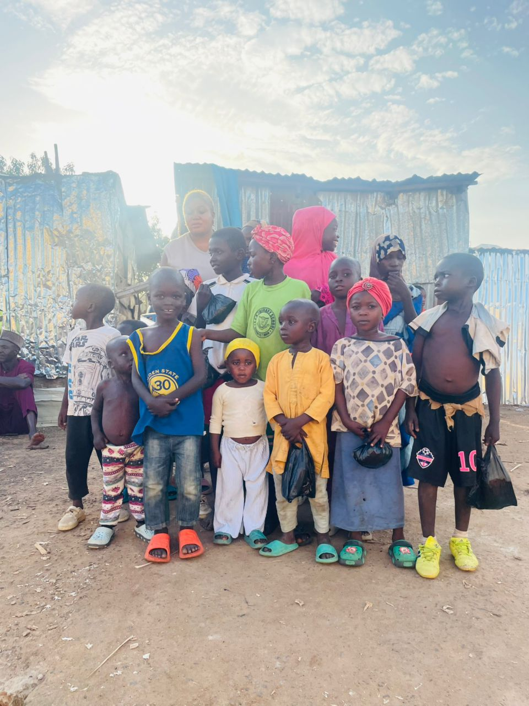

GlobalConnect was founded in 2015 by a group of passionate individuals who believed in the power of community. What started as a small-scale initiative to provide school supplies to local children has grown into a global movement for change. Today, we have a network of volunteers and partners in over 20 countries, working together to create a more just and equitable world.
Our Story

Our Journey
2015
The Beginning
GlobalConnect is founded with a mission to provide educational resources to children in need.
2018
Expansion
We launch our Youth Mentorship Program, connecting young leaders with experienced mentors.
2022
Going Global
Our programs expand to 10 countries, reaching thousands of individuals and families.
Our Values
Empowerment
We believe in empowering individuals and communities to create their own solutions.
Compassion
We approach our work with empathy, understanding, and a deep respect for all people.
Community
We are committed to building strong, supportive communities where everyone belongs.